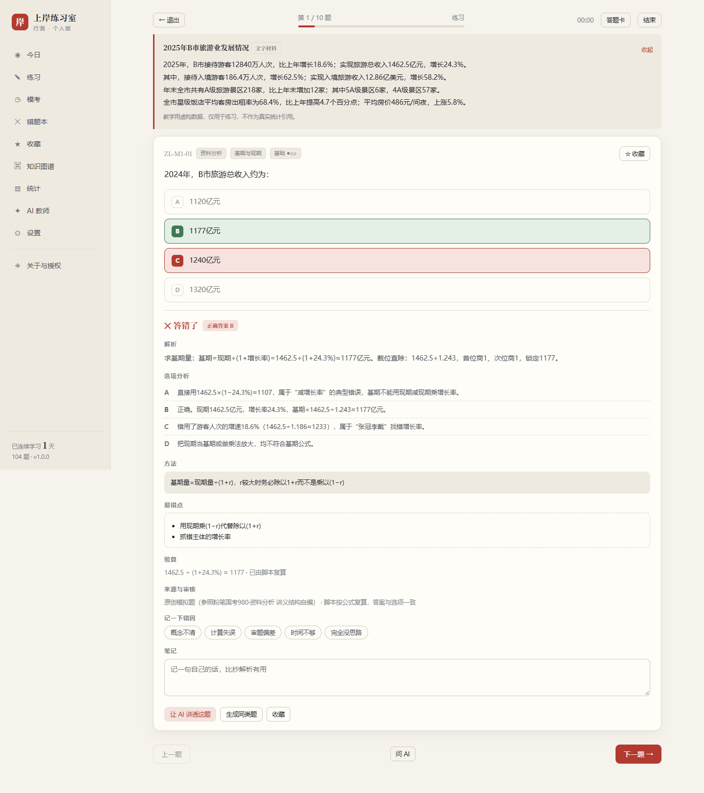
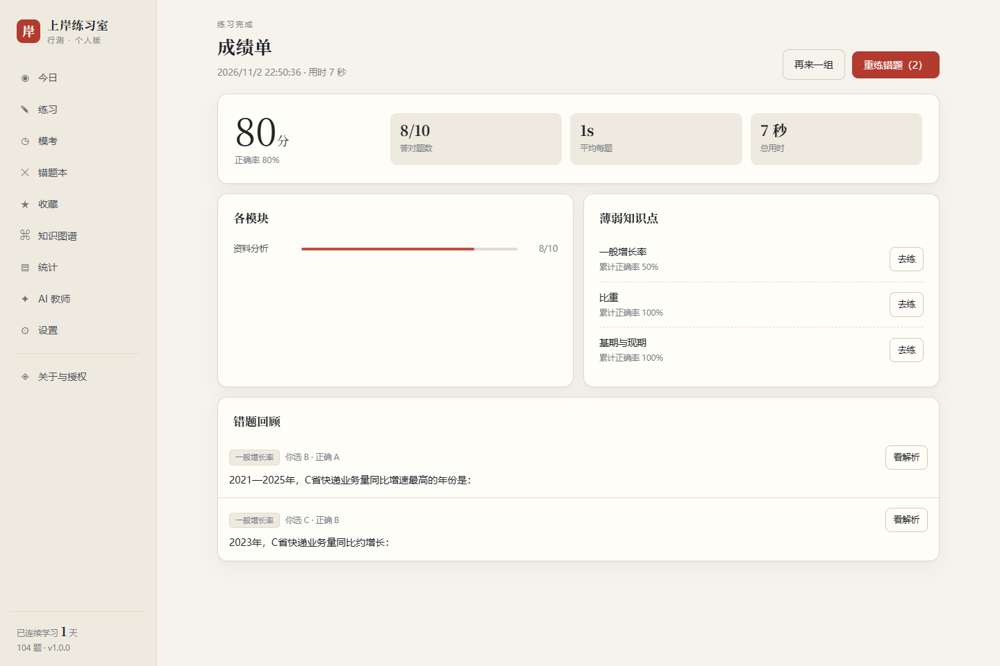

做的每一道题都会留下痕迹：对错、用时、错因、笔记。统计和错题本都从这些痕迹里长出来。
专项按知识点逐个击破，顺序跟着课程走，随机打散检验手感，错题和收藏随时重练。模块、知识点、难度都能组合。
不只给答案。每个选项错在哪、这题该用什么方法、最容易掉进哪个坑，都写在下面。资料题带共享材料表格。
做错自动进本子，记错因：概念不清、计算失误、审题偏差、时间不够。移出前可以反复重做，答对也不自动消失。
按模块比例组卷，倒计时、答题卡、标记、未答提醒、自动交卷。交完给各模块得分和薄弱点，不是只给一个总分。
讲透一道题、逐项拆选项、换个例子、出两道同类题。支持自带 API 密钥，也支持 WorkBuddy 云模型（用积分）。
学习记录存在浏览器本地，不上传。可导出备份、换设备恢复；题库也能继续导入，不写死在代码里。
选完立刻判分，正确答案高亮，错误选项给出诊断。解析下面是方法、易错点、课程出处，和“问 AI 讲透这题”。

知识点按讲义结构整理，每个知识点带课程名、讲师、讲义文件与页码。题目是原创模拟题，不复制讲义原文。
| 模块 | 知识点 | 题量 | 课程出处 |
|---|---|---|---|
| 资料分析 | 速算、基期现期、增长率、增长量、比重、平均数与倍数、特殊增长率、综合训练 | 30 | 邓键 · 资料 1—8 讲 · P310—379 |
| 言语理解 | 逻辑填空、中心理解、细节判断、语句表达 | 19 | 郭熙 · 言语 1—9 讲 |
| 判断推理 | 图形推理、定义判断、类比推理、逻辑判断 | 24 | 程永乐、徐来 · 判断 1—12 讲 |
| 数量关系 | 和差倍比、工程、经济利润、排列组合与概率、几何与数列 | 15 | 田鹏 · 数量 1—4 讲 · P380 起 |
| 常识判断 | 法律、科技、地理、历史人文、经济 | 8 | 刘鸿、李天然 · 常识 1—5 讲 |
| 政治理论 | 习近平新时代中国特色社会主义思想、马克思主义哲学 | 8 | 刘鸿 · 政治理论 1—3 讲 |
| 申论 | 第一阶段未纳入（主观题，需要单独的评分方案） | — | 王韵博、李梦圆 · 申论 1—14 讲 |
交卷后给每个模块的正确率、平均用时、薄弱知识点。统计页把近 14 天的题量、错因分布、知识点掌握度摊开给你看。

只做题的话不需要装任何东西；要让 AI 能用，起一个本地小服务就行。
进入 app/，双击 index.html。题库、判分、记录都能用，AI 不可用。
app/index.html
需要 Node 18+。AI 请求走本地代理，绕开浏览器跨域限制。
node server.js → http://localhost:8787
电脑起服务时绑定 0.0.0.0，手机访问电脑的局域网 IP。
HOST=0.0.0.0 node server.js → http://192.168.x.x:8787